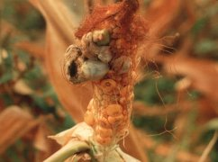

Kukorica golyvás üszög betegsége
Ustilago maydis
A gomba sebeken át helyileg (lokálisan) fertőz, elsősorban a torzsavirágzatot. A kialakuló golyva (duzzanat) előbb ezüstös, fehéres burkot képez, majd később elüszkösödik. Megtámadja az osztódószöveteket is. A gomba a talaj felszínén teliospóra alakban telel.
Védekezés:
- a vetésváltás szigorú betartása
- kerülni a monokultúrás kukoricstermesztést.